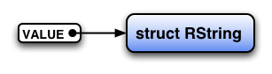
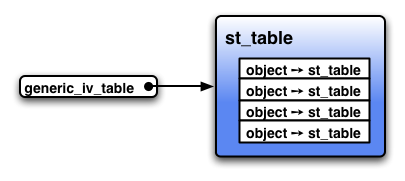

Ruby Hacking Guide
Translated by Vincent ISAMBART
Chapter 2: Objects
Structure of Ruby objects
Guideline
In this chapter we will begin exploring the ruby source code, starting by
studying the declaration of object structures.
What do objects need to exist? There are many answers to this question, but for our purposes an object only needs three things:
- The ability to differentiate itself from other objects (an identity)
- The ability to respond to messages (methods)
- The ability to store internal state (instance variables)
In this chapter, we are going to confirm these three features one by one.
The most interesting file in this quest will be ruby.h, but we will also
briefly look at other files such as object.c, class.c or variable.c.
Structure of VALUE and objects
In ruby, the contents of an object are expressed by a C structure, always
handled via a pointer. A different kind of structure is used for each class, but
the pointer type will always be VALUE (figure 1).
Figure 1: VALUE and structure
Here is the definition of VALUE:
▼ VALUE
71 typedef unsigned long VALUE; (ruby.h)
In practice, a VALUE must be cast to different types of structure pointer.
Therefore if an unsigned long and a pointer have a different size, ruby
will not work well. Strictly speaking, it will not work for pointer types
bigger than sizeof(unsigned long). Fortunately, no recent machine feature
this capability, even if some time ago there were quite a few of them.
Several structures are available according to object classes:
struct RObject |
all things for which none of the following applies |
struct RClass |
class object |
struct RFloat |
small numbers |
struct RString |
string |
struct RArray |
array |
struct RRegexp |
regular expression |
struct RHash |
hash table |
struct RFile |
IO, File, Socket, etc… |
struct RData |
all the classes defined at C level, except the ones mentioned above |
struct RStruct |
Ruby’s Struct class |
struct RBignum |
big integers |
For example, for an string object, struct RString is used, so we will have
something like the following.

Figure 2: String object
Let’s look at the definition of a few object structures.
▼ Examples of object structure
/* structure for ordinary objects */
295 struct RObject {
296 struct RBasic basic;
297 struct st_table *iv_tbl;
298 };
/* structure for strings (instance of String) */
314 struct RString {
315 struct RBasic basic;
316 long len;
317 char *ptr;
318 union {
319 long capa;
320 VALUE shared;
321 } aux;
322 };
/* structure for arrays (instance of Array) */
324 struct RArray {
325 struct RBasic basic;
326 long len;
327 union {
328 long capa;
329 VALUE shared;
330 } aux;
331 VALUE *ptr;
332 };
(ruby.h)
Before looking at every one of them in detail, let’s begin with something more general.
First, as VALUE is defined as unsigned long, it must be cast before
being used. That’s why Rxxxx() macros have been made for each object
structure. For example, for struct RString there is RSTRING(), for
struct RArray there is RARRAY(), etc… These macros are used like this:
VALUE str = ....; VALUE arr = ....; RSTRING(str)->len; /* ((struct RString*)str)->len */ RARRAY(arr)->len; /* ((struct RArray*)arr)->len */
Another important point to mention is that all object structures start with a
member basic of type struct RBasic. As a result, if you cast this VALUE to
struct RBasic*, you will be able to access the content of basic, regardless
of the type of structure pointed to by VALUE.

Figure 3: struct RBasic
You probably guessed that struct RBasic has been designed to contain some
important information shared by all object structures. Here is the definition
for struct RBasic:
▼ struct RBasic
290 struct RBasic {
291 unsigned long flags;
292 VALUE klass;
293 };
(ruby.h)
flags are multipurpose flags, mostly used to register the structure type
(for instance struct RObject). The type flags are named T_xxxx, and can be
obtained from a VALUE using the macro TYPE(). Here is an example:
VALUE str; str = rb_str_new(); /* creates a Ruby string (its structure is RString) */ TYPE(str); /* the return value is T_STRING */
The names of these T_xxxx flags are directly linked to the corresponding type
name, like T_STRING for struct RString and T_ARRAY for struct RArray.
The other member of struct RBasic, klass, contains the class this object
belongs to. As the klass member is of type VALUE, what is stored is (a
pointer to) a Ruby object. In short, it is a class object.

Figure 4: object and class
The relation between an object and its class will be detailed in the “Methods” section of this chapter.
By the way, this member is named klass so as not to conflict with the reserved
word class when the file is processed by a C++ compiler.
About structure types
I said that the type of structure is stored in the flags member of
struct Basic. But why do we have to store the type of structure? It’s to be
able to handle all different types of structure via VALUE. If you cast a
pointer to a structure to VALUE, as the type information does not remain,
the compiler won’t be able to help. Therefore we have to manage the type
ourselves. That’s the consequence of being able to handle all the structure
types in a unified way.
OK, but the used structure is defined by the class so why are the structure type and class are stored separately? Being able to find the structure type from the class should be enough. There are two reasons for not doing this.
The first one is (I’m sorry for contradicting what I said before), in fact
there are structures that do not have a struct RBasic (i.e. they have no
klass member). For example struct RNode that will appear in the second
part of the book. However, flags is guaranteed to be in the beginning
members even in special structures like this. So if you put the type of
structure in flags, all the object structures can be differentiated in one
unified way.
The second reason is that there is no one-to-one correspondence between class
and structure. For example, all the instances of classes defined at the Ruby
level use struct RObject, so finding a structure from a class would require
to keep the correspondence between each class and structure. That’s why it’s
easier and faster to put the information about the type in the structure.
The use of basic.flags
As limiting myself to saying that basic.flags is used for different things
including the type of structure makes me feel bad, here’s a general
illustration for it (figure 5). There is no need to understand everything
right away, I just wanted to show its uses while it was bothering me.

Figure 5: Use of flags
When looking at the diagram, it looks like that 21 bits are not used on 32 bit
machines. On these additional bits, the flags FL_USER0 to FL_USER8 are
defined, and are used for a different purpose for each structure. In the
diagram I also put FL_USER0 (FL_SINGLETON) as an example.
Objects embedded in VALUE
As I said, VALUE is an unsigned long. As VALUE is a pointer, it may look
like void* would also be all right, but there is a reason for not doing
this. In fact, VALUE can also not be a pointer. The 6 cases for which
VALUE is not a pointer are the following:
- small integers
- symbols
truefalsenilQundef
I’ll explain them one by one.
Small integers
Just like in Ruby itself, all data are objects. Likewise, integers are objects. However during normal program execution, lots of instances of integers are created. Using structures to express them would risk slowing down execution. For example, if we created 50000 objects when incrementing from 0 to 50000 we’d definitely have to consider the performance issues.
That’s why in ruby, to some extent, small integers are treated specially and
embedded directly into VALUE. “Small” means signed integers that can be held
in sizeof(VALUE)*8-1 bits. In other words, on 32 bits machines, the integers
have 1 bit for the sign, and 30 bits for the integer part. Integers in this
range will belong to the Fixnum class and the other integers will belong to
the Bignum class.
Let’s see in practice the INT2FIX() macro that converts from a C int
to a Fixnum, and confirm that Fixnum are directly embedded in VALUE.
▼ INT2FIX
123 #define INT2FIX(i) ((VALUE)(((long)(i))<<1 | FIXNUM_FLAG)) 122 #define FIXNUM_FLAG 0x01 (ruby.h)
In brief, shift 1 bit to the left, and bitwise or it with 1.
110100001000 |
before conversion |
1101000010001 |
after conversion |
That means that Fixnum as VALUE will always be an odd number. On the other
hand, as Ruby object structures are allocated with malloc(), they are
generally arranged on addresses multiple of 4. So they do not overlap with the
values of Fixnum as VALUE.
Also, to convert int or long to VALUE, we can use macros like
INT2NUM() or LONG2NUM(). Any conversion macro XXXX2XXXX with a name
containing NUM can manage both Fixnum and Bignum. For example if
INT2NUM() can’t convert an integer into a Fixnum, it will automatically
convert it to Bignum. NUM2INT() will convert both Fixnum and Bignum to
int. If the number can’t fit in an int, an exception will be raised, so
there is no need to check the value range.
Symbols
What are symbols?
As this question is quite troublesome to answer, let’s start with the reasons
why symbols were necessary. First, let’s start with the ID type used inside
ruby. It’s like this:
▼ ID
72 typedef unsigned long ID; (ruby.h)
This ID is a number having a one-to-one association with a string. However,
in this world it’s not possible to have an association between all strings and
a numerical value. That’s why they are limited to the one to one relationships
inside one ruby process. I’ll speak of the method to find an ID in the
next chapter “Names and name tables”.
In language implementations, there are a lot of names to handle. Method names
or variable names, constant names, file names in class names… It’s
troublesome to handle all of them as strings (char*), because of memory
management and memory management and memory management… Also, lots of
comparisons would certainly be necessary, but comparing strings character by
character will slow down the execution. That’s why strings are not handled
directly, something will be associated and used instead. And generally that
“something” will be integers, as they are the simplest to handle.
These ID are found as symbols in the Ruby world. Up to ruby 1.4, the
values of ID were converted to Fixnum, but used as symbols. Even today
these values can be obtained using Symbol#to_i. However, as real use results
came piling up, it was understood that making Fixnum and Symbol the same
was not a good idea, so since 1.6 an independent class Symbol has been
created.
Symbol objects are used a lot, especially as keys for hash tables. That’s
why Symbol, like Fixnum, was made stored in VALUE. Let’s look at the
ID2SYM() macro converting ID to Symbol object.
▼ ID2SYM
158 #define SYMBOL_FLAG 0x0e 160 #define ID2SYM(x) ((VALUE)(((long)(x))<<8|SYMBOL_FLAG)) (ruby.h)
When shifting 8 bits left, x becomes a multiple of 256, that means a
multiple of 4. Then after with a bitwise or (in this case it’s the same as
adding) with 0x0e (14 in decimal), the VALUE expressing the symbol is not
a multiple of 4. Or even an odd number. So it does not overlap the range of
any other VALUE. Quite a clever trick.
Finally, let’s see the reverse conversion of ID2SYM(), SYM2ID().
▼ SYM2ID()
161 #define SYM2ID(x) RSHIFT((long)x,8) (ruby.h)
RSHIFT is a bit shift to the right. As right shift may keep or not the sign
depending of the platform, it became a macro.
true false nil
These three are Ruby special objects. true and false represent the boolean
values. nil is an object used to denote that there is no object. Their
values at the C level are defined like this:
▼ true false nil
164 #define Qfalse 0 /* Ruby's false */ 165 #define Qtrue 2 /* Ruby's true */ 166 #define Qnil 4 /* Ruby's nil */ (ruby.h)
This time it’s even numbers, but as 0 or 2 can’t be used by pointers, they
can’t overlap with other VALUE. It’s because usually the first bloc of
virtual memory is not allocated, to make the programs dereferencing a NULL
pointer crash.
And as Qfalse is 0, it can also be used as false at C level. In practice, in
ruby, when a function returns a boolean value, it’s often made to return an
int or VALUE, and returns Qtrue/Qfalse.
For Qnil, there is a macro dedicated to check if a VALUE is Qnil or not,
NIL_P().
▼ NIL_P()
170 #define NIL_P(v) ((VALUE)(v) == Qnil) (ruby.h)
The name ending with p is a notation coming from Lisp denoting that it is a
function returning a boolean value. In other words, NIL_P means “is the
argument nil?”. It seems the “p” character comes from “predicate.” This
naming rule is used at many different places in ruby.
Also, in Ruby, false and nil are falsy (that is, they count as false in
conditional statements) and all the other objects are truthy.
However, in C, nil (Qnil) is true. That’s why in C a Ruby-style macro,
RTEST(), has been created.
▼ RTEST()
169 #define RTEST(v) (((VALUE)(v) & ~Qnil) != 0) (ruby.h)
As in Qnil only the third lower bit is 1, in ~Qnil only the third lower
bit is 0. Then only Qfalse and Qnil become 0 with a bitwise and.
!=0 has been added to be certain to only have 0 or 1, to satisfy the
requirements of the glib library that only wants 0 or 1
([ruby-dev:11049]).
By the way, what is the ‘Q’ of Qnil? ‘R’ I would have understood but why
‘Q’? When I asked, the answer was “Because it’s like that in Emacs.” I did
not have the fun answer I was expecting…
Qundef
▼ Qundef
167 #define Qundef 6 /* undefined value for placeholder */ (ruby.h)
This value is used to express an undefined value in the interpreter. It can’t be found at all at the Ruby level.
Methods
I already brought up the three important points of a Ruby object: having an identity, being able to call a method, and keeping data for each instance. In this section, I’ll explain in a simple way the structure linking objects and methods.
struct RClass
In Ruby, classes exist as objects during the execution. Of course. So there
must be a structure for class objects. That structure is struct RClass. Its
structure type flag is T_CLASS.
As class and modules are very similar, there is no need to differentiate their
content. That’s why modules also use the struct RClass structure, and are
differentiated by the T_MODULE structure flag.
▼ struct RClass
300 struct RClass {
301 struct RBasic basic;
302 struct st_table *iv_tbl;
303 struct st_table *m_tbl;
304 VALUE super;
305 };
(ruby.h)
First, let’s focus on the m_tbl (Method TaBLe) member. struct st_table is
an hashtable used everywhere in ruby. Its details will be explained in the
next chapter “Names and name tables”, but basically, it is a table mapping
names to objects. In the case of m_tbl, it keeps the
correspondence between the name (ID) of the methods possessed by this class
and the methods entity itself.
The fourth member super keeps, like its name suggests, the superclass. As
it’s a VALUE, it’s (a pointer to) the class object of the superclass. In Ruby
there is only one class that has no superclass (the root class): Object.
However I already said that all Object methods are defined in the Kernel
module, Object just includes it. As modules are functionally similar to
multiple inheritance, it may seem having just super is problematic, but
in ruby some clever changes are made to make it look like single
inheritance. The details of this process will be explained in the fourth
chapter “Classes and modules”.
Because of this, super of the structure of Object points to struct RClass
of the Kernel object. Only the super of Kernel is NULL. So contrary to
what I said, if super is NULL, this RClass is the Kernel object (figure
6).

Figure 6: Class tree at the C level
Methods search
With classes structured like this, you can easily imagine the method call
process. The m_tbl of the object’s class is searched, and if the method was
not found, the m_tbl of super is searched, and so on. If there is no more
super, that is to say the method was not found even in Object, then it
must not be defined.
The sequential search process in m_tbl is done by search_method().
▼ search_method()
256 static NODE*
257 search_method(klass, id, origin)
258 VALUE klass, *origin;
259 ID id;
260 {
261 NODE *body;
262
263 if (!klass) return 0;
264 while (!st_lookup(RCLASS(klass)->m_tbl, id, &body)) {
265 klass = RCLASS(klass)->super;
266 if (!klass) return 0;
267 }
268
269 if (origin) *origin = klass;
270 return body;
271 }
(eval.c)
This function searches the method named id in the class object klass.
RCLASS(value) is the macro doing:
((struct RClass*)(value))
st_lookup() is a function that searches in st_table the value
corresponding to a key. If the value is found, the function returns true and
puts the found value at the address given in third parameter (&body).
Nevertheless, doing this search each time whatever the circumstances would be
too slow. That’s why in reality, once called, a method is cached. So starting
from the second time it will be found without following super one by one.
This cache and its search will be seen in the 15th chapter “Methods”.
Instance variables
In this section, I will explain the implementation of the third essential condition, instance variables.
rb_ivar_set()
Instance variables are what allows each object to store characteristic data.
Having it stored in the object itself (i.e. in the object structure) may seem
all right but how is it in practice? Let’s look at the function
rb_ivar_set() that puts an object in an instance variable.
▼ rb_ivar_set()
/* write val in the id instance of obj */
984 VALUE
985 rb_ivar_set(obj, id, val)
986 VALUE obj;
987 ID id;
988 VALUE val;
989 {
990 if (!OBJ_TAINTED(obj) && rb_safe_level() >= 4)
991 rb_raise(rb_eSecurityError,
"Insecure: can't modify instance variable");
992 if (OBJ_FROZEN(obj)) rb_error_frozen("object");
993 switch (TYPE(obj)) {
994 case T_OBJECT:
995 case T_CLASS:
996 case T_MODULE:
997 if (!ROBJECT(obj)->iv_tbl)
ROBJECT(obj)->iv_tbl = st_init_numtable();
998 st_insert(ROBJECT(obj)->iv_tbl, id, val);
999 break;
1000 default:
1001 generic_ivar_set(obj, id, val);
1002 break;
1003 }
1004 return val;
1005 }
(variable.c)
rb_raise() and rb_error_frozen() are both error checks. Error checks are
necessary, but it’s not the main part of the treatment, so you should ignore
them at first read.
After removing error treatment, only the switch remains, but this
switch (TYPE(obj)) {
case T_aaaa:
case T_bbbb:
...
}
form is characteristic of ruby. TYPE() is the macro returning the type
flag of the object structure (T_OBJECT, T_STRING, etc.). In other words as
the type flag is an integer constant, we can branch depending on it with a
switch. Fixnum or Symbol do not have structures, but inside TYPE() a
special treatment is done to properly return T_FIXNUM and T_SYMBOL, so
there’s no need to worry.
Well, let’s go back to rb_ivar_set(). It seems only the treatments of
T_OBJECT, T_CLASS and T_MODULE are different. These 3 have been chosen on
the basis that their second member is iv_tbl. Let’s confirm it in practice.
▼ Structures whose second member is iv_tbl
/* TYPE(val) == T_OBJECT */
295 struct RObject {
296 struct RBasic basic;
297 struct st_table *iv_tbl;
298 };
/* TYPE(val) == T_CLASS or T_MODULE */
300 struct RClass {
301 struct RBasic basic;
302 struct st_table *iv_tbl;
303 struct st_table *m_tbl;
304 VALUE super;
305 };
(ruby.h)
iv_tbl is the Instance Variable TaBLe. It stores instance variable names and
their corresponding value.
In rb_ivar_set(), let’s look again the code for the structures having
iv_tbl.
if (!ROBJECT(obj)->iv_tbl)
ROBJECT(obj)->iv_tbl = st_init_numtable();
st_insert(ROBJECT(obj)->iv_tbl, id, val);
break;
ROBJECT() is a macro that casts a VALUE into a `struct
RObject*. It's possible that obj` points to a struct RClass, but as
we’re only going to access the second member no problem will occur.
st_init_numtable() is a function creating a new st_table. st_insert() is
a function doing associations in a st_table.
In conclusion, this code does the following: if iv_tbl does not exist, it
creates it, then stores the [variable name → object] association.
Warning: as struct RClass is a class object, this instance variable table is
for the use of the class object itself. In Ruby programs, it corresponds to
something like the following:
class C @ivar = "content" end
generic_ivar_set()
For objects for which the structure used is not T_OBJECT, T_MODULE, or
T_CLASS, what happens when modifying an instance variable?
▼ rb_ivar_set() in the case there is no iv_tbl
1000 default: 1001 generic_ivar_set(obj, id, val); 1002 break; (variable.c)
The control is transferred to generic_ivar_set(). Before looking at this
function, let’s first explain its general idea.
Structures that are not T_OBJECT, T_MODULE or T_CLASS do not have an
iv_tbl member (the reason why they do not have it will be explained later).
However, a method linking an instance to a struct st_table would allow
instances to have instance variables. In ruby, this was solved by using a
global st_table, generic_iv_table (figure 7) for these associations.

Figure 7: generic_iv_table
Let’s see this in practice.
▼ generic_ivar_set()
801 static st_table *generic_iv_tbl;
830 static void
831 generic_ivar_set(obj, id, val)
832 VALUE obj;
833 ID id;
834 VALUE val;
835 {
836 st_table *tbl;
837
/* for the time being you should ignore this */
838 if (rb_special_const_p(obj)) {
839 special_generic_ivar = 1;
840 }
/* initialize generic_iv_tbl if it does not exist */
841 if (!generic_iv_tbl) {
842 generic_iv_tbl = st_init_numtable();
843 }
844
/* the treatment itself */
845 if (!st_lookup(generic_iv_tbl, obj, &tbl)) {
846 FL_SET(obj, FL_EXIVAR);
847 tbl = st_init_numtable();
848 st_add_direct(generic_iv_tbl, obj, tbl);
849 st_add_direct(tbl, id, val);
850 return;
851 }
852 st_insert(tbl, id, val);
853 }
(variable.c)
rb_special_const_p() is true when its parameter is not a pointer. However,
as this if part requires knowledge of the garbage collector, we’ll skip it
for now. I’d like you to check it again after reading the chapter 5 “Garbage
collection”.
st_init_numtable() already appeared some time ago. It creates a new hash
table.
st_lookup() searches a value corresponding to a key. In this case it
searches for what’s attached to obj. If an attached value can be found, the
whole function returns true and stores the value at the address (&tbl) given
as third parameter. In short, !st_lookup(...) can be read “if a value can’t
be found”.
st_insert() was also already explained. It stores a new association in a
table.
st_add_direct() is similar to st_insert(), but the part before adding the
association that checks if the key was already stored or not is different. In
other words, in the case of st_add_direct(), if a key already registered is
being used, two associations linked to this same key will be stored.
st_add_direct() can be used when the check for existence has already been
done, as is the case here, or when a new table has just been created.
FL_SET(obj, FL_EXIVAR) is the macro that sets the FL_EXIVAR flag in the
basic.flags of obj. The basic.flags flags are all named FL_xxxx and
can be set using FL_SET(). These flags can be unset with FL_UNSET(). The
EXIVAR from FL_EXIVAR seems to be the abbreviation of EXternal Instance
VARiable.
The setting of these flags is done to speed up the reading of instance
variables. If FL_EXIVAR is not set, even without searching in
generic_iv_tbl, we directly know if the object has instance variables. And
of course a bit check is way faster than searching a struct st_table.
Gaps in structures
Now you should understand how the instance variables are stored, but why are
there structures without iv_tbl? Why is there no iv_tbl in
struct RString or struct RArray? Couldn’t iv_tbl be part of RBasic?
Well, this could have been done, but there are good reasons why it was not. As
a matter of fact, this problem is deeply linked to the way ruby manages
objects.
For example, in ruby, memory used by string data (char[]) is directly
allocated using malloc(). However, the object structures are handled in a
particular way. ruby allocates them by clusters, and then distribute them
from these clusters. As at allocation time the diversity of types (and sizes)
of structures is difficult to handle, a type (union) that combines all
structures RVALUE was declared and an array of this type is managed. As this
type’s size is the same as the biggest one of its members, if there is only
one big structure, there is a lot of unused space. That’s why doing as much as
possible to regroup structures of similar size is desirable. The details about
RVALUE will be explained in chapter 5 “Garbage collection”.
Generally the most used structure is struct RString. After that, in programs
there are struct RArray (array), RHash (hash), RObject (user defined
object), etc. However, this struct RObject only uses the space of
struct RBasic + 1 pointer. On the other hand, struct RString, RArray and
RHash take the space of struct RBasic + 3 pointers. In other words, when
putting a struct RObject in the shared entity, the space for 2 pointers is
useless. And beyond that, if RString had 4 pointers, RObject would use less
that half the size of the shared entity. As you would expect, it’s wasteful.
So the received merit for iv_tbl is more or less saving memory and speeding
up. Furthermore we do not know if it is used often or not. In fact,
generic_iv_tbl was not introduced before ruby 1.2, so it was not possible
to use instance variables in String or Array at that time. Nevertheless, it
was not much of a problem. Making large amounts of memory useless just for
such functionality looks stupid.
If you take all this into consideration, you can conclude that increasing the size of object structures does not do any good.
rb_ivar_get()
We saw the rb_ivar_set() function that sets variables, so let’s see quickly
how to get them.
▼ rb_ivar_get()
960 VALUE
961 rb_ivar_get(obj, id)
962 VALUE obj;
963 ID id;
964 {
965 VALUE val;
966
967 switch (TYPE(obj)) {
/* (A) */
968 case T_OBJECT:
969 case T_CLASS:
970 case T_MODULE:
971 if (ROBJECT(obj)->iv_tbl &&
st_lookup(ROBJECT(obj)->iv_tbl, id, &val))
972 return val;
973 break;
/* (B) */
974 default:
975 if (FL_TEST(obj, FL_EXIVAR) || rb_special_const_p(obj))
976 return generic_ivar_get(obj, id);
977 break;
978 }
/* (C) */
979 rb_warning("instance variable %s not initialized", rb_id2name(id));
980
981 return Qnil;
982 }
(variable.c)
The structure is strictly the same.
(A) For struct RObject or RClass, we search the variable in iv_tbl. As
iv_tbl can also be NULL, we must check it before using it. Then if
st_lookup() finds the relation, it returns true, so the whole if can be
read as “If the instance variable has been set, return its value”.
(C) If no correspondence could be found, in other words if we read an
instance variable that has not been set, we first leave the if then the
switch. rb_warning() will then issue a warning and nil will be returned.
That’s because you can read instance variables that have not been set in Ruby.
(B) On the other hand, if the structure is neither struct RObject nor
RClass, the instance variable table is searched in generic_iv_tbl. What
generic_ivar_get() does can be easily guessed, so I won’t explain it. I’d
rather want you to focus on the if.
I already told you that generic_ivar_set() sets the FL_EXIVAR flag to make
the check faster.
And what is rb_special_const_p()? This function returns true when its
parameter obj does not point to a structure. As no structure means no
basic.flags, no flag can be set, and FL_xxxx() will always returns false.
That’s why these objects have to be treated specially.
Structures for objects
In this section we’ll see simply, among object structures, what the important ones contain and how they are handled.
struct RString
struct RString is the structure for the instances of the String class and
its subclasses.
▼ struct RString
314 struct RString {
315 struct RBasic basic;
316 long len;
317 char *ptr;
318 union {
319 long capa;
320 VALUE shared;
321 } aux;
322 };
(ruby.h)
ptr is a pointer to the string, and len the length of that string. Very
straightforward.
Rather than a string, Ruby’s string is more a byte array, and can contain any
byte including NUL. So when thinking at the Ruby level, ending the string
with NUL does not mean anything. As C functions require NUL, for
convenience the ending NUL is there, however, it is not included in len.
When dealing with a string coming from the interpreter or an extension
library, you can write RSTRING(str)->ptr or RSTRING(str)->len, and access
ptr and len. But there are some points to pay attention to.
- you have to check before if
strreally points to astruct RString - you can read the members, but you must not modify them
- you can’t store
RSTRING(str)->ptrin something like a local variable and use it later
Why is that? First, there is an important software engineering principle:
Don’t arbitrarily tamper with someone’s data. Interface functions are there
for a reason. However, there are concrete reasons in ruby‘s design
why you should not do such things as consulting or storing a pointer, and
that’s related to the fourth member aux. However, to explain properly how to
use aux, we have to explain first a little more of Ruby’s strings’
characteristics.
Ruby’s strings can be modified (are mutable). By mutable I mean after the following code:
s = "str" # create a string and assign it to s
s.concat("ing") # append "ing" to this string object
p(s) # show the string
the content of the object pointed by s will become “string”. It’s
different from Java or Python string objects. Java’s StringBuffer is closer.
And what’s the relation? First, mutable means the length (len) of the string
can change. We have to increase or decrease the allocated memory size each time
the length changes. We can of course use realloc() for that, but generally
malloc() and realloc() are heavy operations. Having to realloc() each
time the string changes is a huge burden.
That’s why the memory pointed by ptr has been allocated with a size a little
bigger than len. Because of that, if the added part can fit into the
remaining memory, it’s taken care of without calling realloc(), so it’s
faster. The structure member aux.capa contains the length including this
additional memory.
So what is this other aux.shared? It’s to speed up the creation of literal
strings. Have a look at the following Ruby program.
while true do # repeat indefinitely
a = "str" # create a string with "str" as content and assign it to a
a.concat("ing") # append "ing" to the object pointed by a
p(a) # show "string"
end
Whatever the number of times you repeat the loop, the fourth line’s p has to
show "string". That’s why the code "str" should create, each time, a string
object holding a different char[]. However, if no change occurs for a lot of
strings, useless copies of char[] can be created many times. It would be better
to share one common char[].
The trick that allows this to happen is aux.shared. String objects created
with a literal use one shared char[]. When a change occurs, the string is
copied in unshared memory, and the change is done on this new copy. This
technique is called “copy-on-write”. When using a shared char[], the flag
ELTS_SHARED is set in the object structure’s basic.flags, and aux.shared
contains the original object. ELTS seems to be the abbreviation of
ELemenTS.
But, well, let’s return to our talk about RSTRING(str)->ptr. Even if
consulting the pointer is OK, you must not modify it, first because the value
of len or capa will no longer agree with the content, and also because when
modifying strings created as litterals, aux.shared has to be separated.
To finish this section about RString, let’s write some examples how to use
it. str is a VALUE that points to RString.
RSTRING(str)->len; /* length */
RSTRING(str)->ptr[0]; /* first character */
str = rb_str_new("content", 7); /* create a string with "content" as its content
the second parameter is the length */
str = rb_str_new2("content"); /* create a string with "content" as its content
its length is calculated with strlen() */
rb_str_cat2(str, "end"); /* Concatenate a C string to a Ruby string */
struct RArray
struct RArray is the structure for the instances of Ruby’s array class
Array.
▼ struct RArray
324 struct RArray {
325 struct RBasic basic;
326 long len;
327 union {
328 long capa;
329 VALUE shared;
330 } aux;
331 VALUE *ptr;
332 };
(ruby.h)
Except for the type of ptr, this structure is almost the same as
struct RString. ptr points to the content of the array, and len is its
length. aux is exactly the same as in struct RString. aux.capa is the
“real” length of the memory pointed by ptr, and if ptr is shared,
aux.shared stores the shared original array object.
From this structure, it’s clear that Ruby’s Array is an array and not a
list. So when the number of elements changes in a big way, a realloc() must
be done, and if an element must be inserted at an other place than the end, a
memmove() will occur. But even if we do it, it’s moving so fast it’s really
impressive on current machines.
That’s why the way to access it is similar to RString. You can consult
RARRAY(arr)->ptr and RARRAY(arr)->len members, but can’t set them, etc.,
etc. We’ll only look at simple examples:
/* manage an array from C */ VALUE ary; ary = rb_ary_new(); /* create an empty array */ rb_ary_push(ary, INT2FIX(9)); /* push a Ruby 9 */ RARRAY(ary)->ptr[0]; /* look what's at index 0 */ rb_p(RARRAY(ary)->ptr[0]); /* do p on ary[0] (the result is 9) */ # manage an array from Ruby ary = [] # create an empty array ary.push(9) # push 9 ary[0] # look what's at index 0 p(ary[0]) # do p on ary[0] (the result is 9)
struct RRegexp
It’s the structure for the instances of the regular expression class Regexp.
▼ struct RRegexp
334 struct RRegexp {
335 struct RBasic basic;
336 struct re_pattern_buffer *ptr;
337 long len;
338 char *str;
339 };
(ruby.h)
ptr is the regular expression after compilation. str is the string before
compilation (the source code of the regular expression), and len is this
string’s length.
As the Regexp object handling code doesn’t appear in this book, we won’t see
how to use it. Even if you use it in extension libraries, as long as you do
not want to use it a very particular way, the interface functions are enough.
struct RHash
struct RHash is the structure for Ruby’s Hash objects.
▼ struct RHash
341 struct RHash {
342 struct RBasic basic;
343 struct st_table *tbl;
344 int iter_lev;
345 VALUE ifnone;
346 };
(ruby.h)
It’s a wrapper for struct st_table. st_table will be detailed in the next
chapter “Names and name tables”.
ifnone is the value when a key does not have an attached value, its default
is nil. iter_lev is to make the hashtable reentrant (multithread safe).
struct RFile
struct RFile is a structure for instances of the built-in IO class and
its subclasses.
▼ struct RFile
348 struct RFile {
349 struct RBasic basic;
350 struct OpenFile *fptr;
351 };
(ruby.h)
▼ OpenFile
19 typedef struct OpenFile {
20 FILE *f; /* stdio ptr for read/write */
21 FILE *f2; /* additional ptr for rw pipes */
22 int mode; /* mode flags */
23 int pid; /* child's pid (for pipes) */
24 int lineno; /* number of lines read */
25 char *path; /* pathname for file */
26 void (*finalize) _((struct OpenFile*)); /* finalize proc */
27 } OpenFile;
(rubyio.h)
All members have been transferred in struct OpenFile. As there aren’t many
instances of IO objects, it’s OK to do it like this. The purpose of each member
is written in the comments. Basically, it’s a wrapper around C’s stdio.
struct RData
struct RData has a different tenor from what we saw before. It is the
structure for implementation of extension libraries.
Of course structures for classes created in extension libraries as necessary,
but as the types of these structures depend of the created class, it’s
impossible to know their size or structure in advance. That’s why a “structure
for managing a pointer to a user defined structure” has been created on
ruby’s side to manage this. This structure is struct RData.
▼ struct RData
353 struct RData {
354 struct RBasic basic;
355 void (*dmark) _((void*));
356 void (*dfree) _((void*));
357 void *data;
358 };
(ruby.h)
data is a pointer to the user defined structure,
dfree is the function used to free this structure, and
dmark is the function for when the “mark” of the mark and sweep occurs.
Because explaining struct RData is still too complicated, for
the time being let’s just look at its representation (figure 8). You’ll read
a detailed explanation of its members in chapter 5 “Garbage collection” where
there’ll be presented once again.

Figure 8: Representation of struct RData